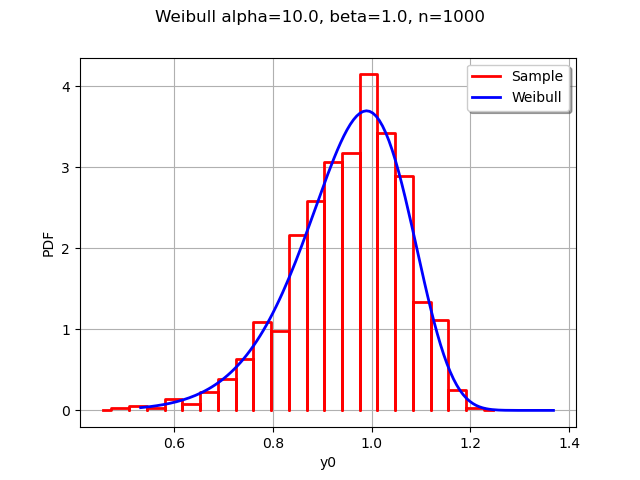
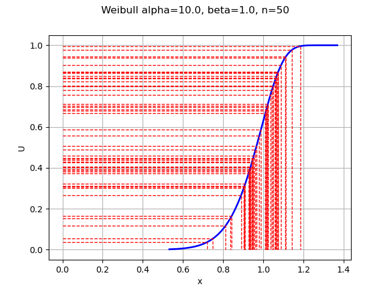

Note
Go to the end to download the full example code
Generate random variates by inverting the CDF¶
Abstract¶
In this example, we show how to generate random variates by inversion of the cumulated distribution function. In simple situations, this method is rarely used in practice because of problems with performance, statistical quality of the generated random variates and numerical accuracy of the generated numbers when we use floating point numbers. However, it is an interesting method to know about because it is a building block for other algorithms and can be used to visualize the distribution of the generated numbers.
The WeibullMin distribution¶
Let  and
and  be two real parameters:
be two real parameters:  is a shape parameter and
is a shape parameter and  is a scale parameter.
is a scale parameter.
The cumulated distribution function of the WeibullMin distribution (also referred as Weibull distribution) is:
![F(x) = 1 - \exp\left(-\frac{x-\gamma}{\beta}\right)^\alpha,]()
for any  . For the sake of simplicity, we set
. For the sake of simplicity, we set 
In some situations, this parameters are denoted by  and
and  .
.
The inverse of the CDF is:
![F^{-1}(x) = \beta \left(-\log(1-p)\right)^{\frac{1}{\alpha}}]()
for any  .
.
This is the quantile function, because it computes the quantile  depending on an outcome
depending on an outcome  .
.
Loss of accuracy when the probability is close to 1¶
In practice, if the probability  is very close to 1, then the complementary probability
is very close to 1, then the complementary probability  is close to zero.
This can lead to a significant loss of accuracy when we evaluate the subtraction with floating point numbers because and 1 have lots of common digits.
This is called a loss of accuracy by catastrophic cancellation, a problem which is common in extreme events.
is close to zero.
This can lead to a significant loss of accuracy when we evaluate the subtraction with floating point numbers because and 1 have lots of common digits.
This is called a loss of accuracy by catastrophic cancellation, a problem which is common in extreme events.
We can use the  function, defined by the equation:
function, defined by the equation:
![\textrm{expm1}(x) = \exp(x)-1,]()
for any  . This is not numerically equivalent to computing exp and then subtracting 1. Indeed, the expm1 function is more accurate when its argument x is close to zero.
. This is not numerically equivalent to computing exp and then subtracting 1. Indeed, the expm1 function is more accurate when its argument x is close to zero.
The CDF is then:
![F(x) = -\textrm{expm1} \left(\left(-\frac{x}{\beta}\right)^\alpha\right),]()
for any .
For the quantile function, we can use the  function, defined by the equation:
function, defined by the equation:

for any  .
.
Therefore, the quantile function is:
![x = \beta \left(-\textrm{log1p}(-p)\right)^{\frac{1}{\alpha}}]()
for .
Note that for  , the quantile function writes:
, the quantile function writes:
![x = \gamma + \beta \left(-\textrm{log1p}(-p)\right)^{\frac{1}{\alpha}}]()
with .
In the following, we will not use these robust equations and this issue will not be taken into account.
Generate by inversion: histogram and density¶
import openturns as ot
import openturns.viewer as viewer
from matplotlib import pylab as plt
import numpy as np
ot.Log.Show(ot.Log.NONE)
The following function defines the quantile function of the WeibullMin distribution. (Of course, we could use the computeQuantile method of the WeibullMin class as well. This would create a simpler, but less interesting example: this is a trade off that we accept in order to better understand the algorithm.)
def weibullQ(argument):
"""
WeibullMin quantile function
"""
p, alpha, beta = argument
quantile = beta * (-np.log1p(-p)) ** (1 / alpha)
return [quantile]
quantileFunction = ot.PythonFunction(3, 1, weibullQ)
We define the parameters of the Weibull distribution and create the parametric function.
alpha = 10.0
beta = 1.0
quantile = ot.ParametricFunction(quantileFunction, [1, 2], [alpha, beta])
quantile
In the library, the uniform distribution is by default over the ![[-1,1]]() interval. To obtain a uniform distribution over
interval. To obtain a uniform distribution over ![[0,1]]() , we need to set the bounds explicitly.
, we need to set the bounds explicitly.
U = ot.Uniform(0.0, 1.0)
Then we generate a sample of size 1000 from the uniform distribution.
n = 1000
uniformSample = U.getSample(n)
To generate the numbers, we evaluate the quantile function on the uniform numbers.
weibullSample = quantile(uniformSample)
In order to compare the results, we use the WeibullMin class (using the default value of the location parameter ).
W = ot.WeibullMin(beta, alpha)
histo = ot.HistogramFactory().build(weibullSample).drawPDF()
histo.setTitle("Weibull alpha=%s, beta=%s, n=%d" % (alpha, beta, n))
histo.setLegends(["Sample"])
wpdf = W.drawPDF()
wpdf.setColors(["blue"])
wpdf.setLegends(["Weibull"])
histo.add(wpdf)
view = viewer.View(histo)

We see that the empirical histogram of the generated outcomes is close to the exact density of the Weibull distribution.
Visualization of the quantiles¶
We now want to understand the details of the algorithm. To do this, we need to compare the distribution of the uniform numbers with the distribution of the generated points.
n = 50
uniformSample = U.getSample(n)
weibullSample = quantile(uniformSample)
We sort the sample by increasing order.
data = ot.Sample(n, 2)
data[:, 0] = weibullSample
data[:, 1] = uniformSample
data.setDescription(["x", "p"])
sample = ot.Sample(data.sort())
sample[0:5, :]
weibullSample = sample[:, 0]
uniformSample = sample[:, 1]
graph = ot.Graph("Weibull alpha=%s, beta=%s, n=%s" % (alpha, beta, n), "x", "U", True)
# Add the CDF plot
curve = W.drawCDF()
curve.setColors(["blue"])
graph.add(curve)
# Plot dashed horizontal & vertical lines
for i in range(n):
curve = ot.Curve(
[0.0, weibullSample[i, 0], weibullSample[i, 0]],
[uniformSample[i, 0], uniformSample[i, 0], 0.0],
)
curve.setColor("red")
curve.setLineStyle("dashed")
graph.add(curve)
view = viewer.View(graph)
plt.show()

This graphics must be read from the U axis on the left to the blue curve (representing the CDF), and down to the X axis. We see that the horizontal lines on the U axis follow the uniform distribution. On the other hand, the vertical lines (on the X axis) follow the Weibull distribution.